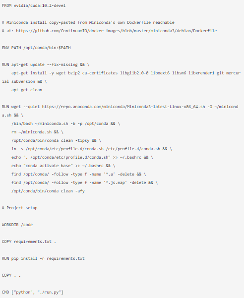
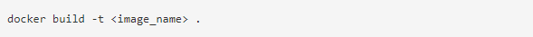
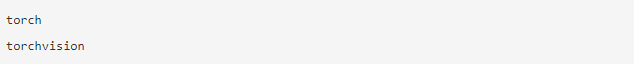
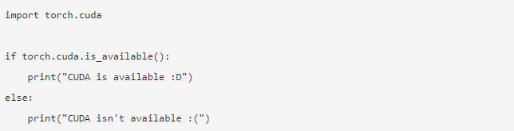

A tutorial about how to connect Docker with PyCharm to write python code
For this tutorial I’m using a toy project with just 3 files:
- A Dockerfile to generate the container.
- A requirements.txt file that contains the dependencies of the project.
- A single run.py file that contains some code to run. Obviously, your personal project will most likely be more complex, you may use a different method for dependency management and you might also use a docker-compose.yaml file but for the sake of getting my point through that is pointless complexity.
Dockerfile
Here follow our Dockerfile and a brief explanation
(Image Source: https://www.analyticsvidhya.com/blog)
In terms a Dockerfile describes a procedure to generate a Docker image that is then used to create Docker containers. This Dockerfile builds on top of the nvidia/cuda:10.2-devel image made available in DockerHub directly by NVIDIA.
nvidia/cuda:10.2-devel is a development image with the CUDA 10.2 toolkit already installed
Now you just need to install what we need for Python development and setup our project.
In the middle section of the Dockerfile there is a Miniconda3 installation. I decided to use Miniconda instead of just using Python because it’s my go-to platform for most of my projects. We are leveraging none of Miniconda capabilities so it is kind of overkill. Swapping out Miniconda with a vanilla installation of Python in the Dockerfile is left to the reader as an exercise.
The last section is about the project setup, we are just installing the dependencies and copying all the files inside the image work directory and choosing the command to launch when docker run is called without a specified command.
To build the Docker image just navigate with your shell of choice to the path containing the Dockerfile and run:
(Image Source: https://www.analyticsvidhya.com/blog)
This will generate the Docker image as described by the configuration and give it the name image_name. If in the name no tag is specified latest is used as a default. To specify the tag just write it after a colon.
I will use the name pytorch-development-box for the image in the rest of the tutorial.
requirements.txt
I’m using only Pytorch and Torchvision as the dependencies for this project. I use those packages a lot and I will use their CUDA availability method to check if everything is working. So the content of my requirements.txt is:
(Image Source: https://www.analyticsvidhya.com/blog)
run.py
(Image Source: https://www.analyticsvidhya.com/blog)
My Python file is quite simple, I’m just checking if CUDA is available or not.
Setting up PyCharm:
Using a remote Python interpreter from Docker is available only on PyCharm Professional. So, let’s see how to set it up.
Once you’ve built your Docker image and opened your project folder in PyCharm navigate to File > Settings > Project > Python Interpreter.
You should see something like this:

(Image Source: https://www.analyticsvidhya.com/blog)
Now click on the little gear near the top-right and add a new Python interpreter.
Here you will need to select Docker and choose the image name you selected before in the drop-down menu called Image name like so:

(Image Source: https://www.analyticsvidhya.com/blog)
After this configuration is confirmed, wait for the indexing to finish, and try running run.py.
(Image Source: https://www.analyticsvidhya.com/blog)
At this point, we didn’t configure the Run/Debug configuration to have Docker use the GPU but we can quickly fix it.
Open the auto-generated Run/Debug configuration and add --gpus all at the end of the Docker container settings.
You should end up with something like this:

(Image Source: https://www.analyticsvidhya.com/blog)
Confirm this configuration and run it. The CUDA result is available now!